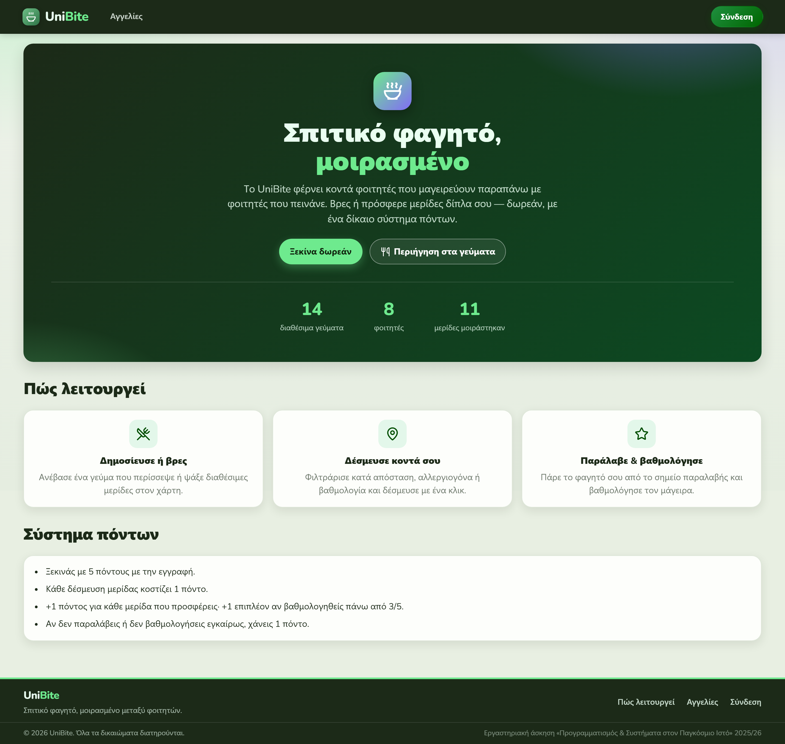
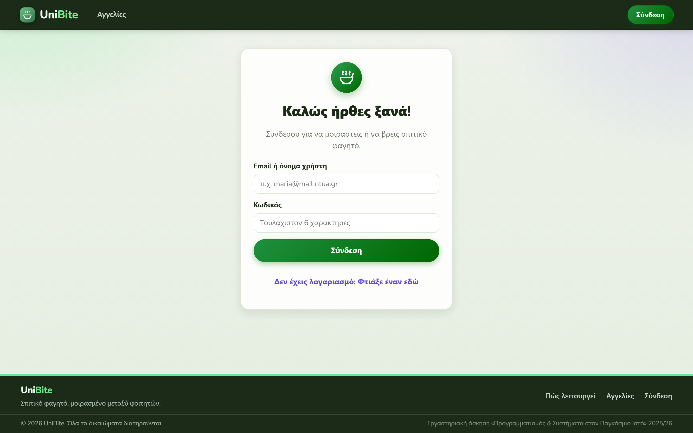
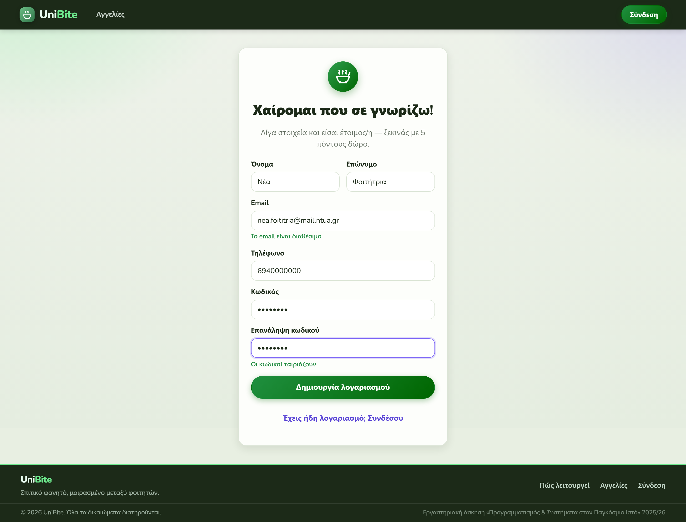
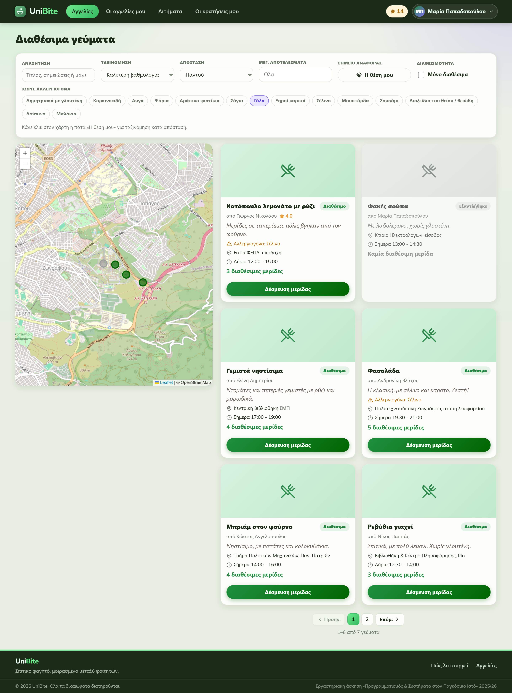
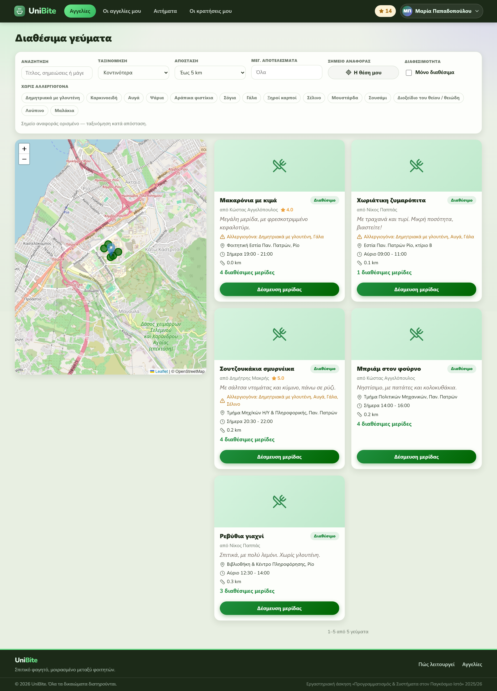
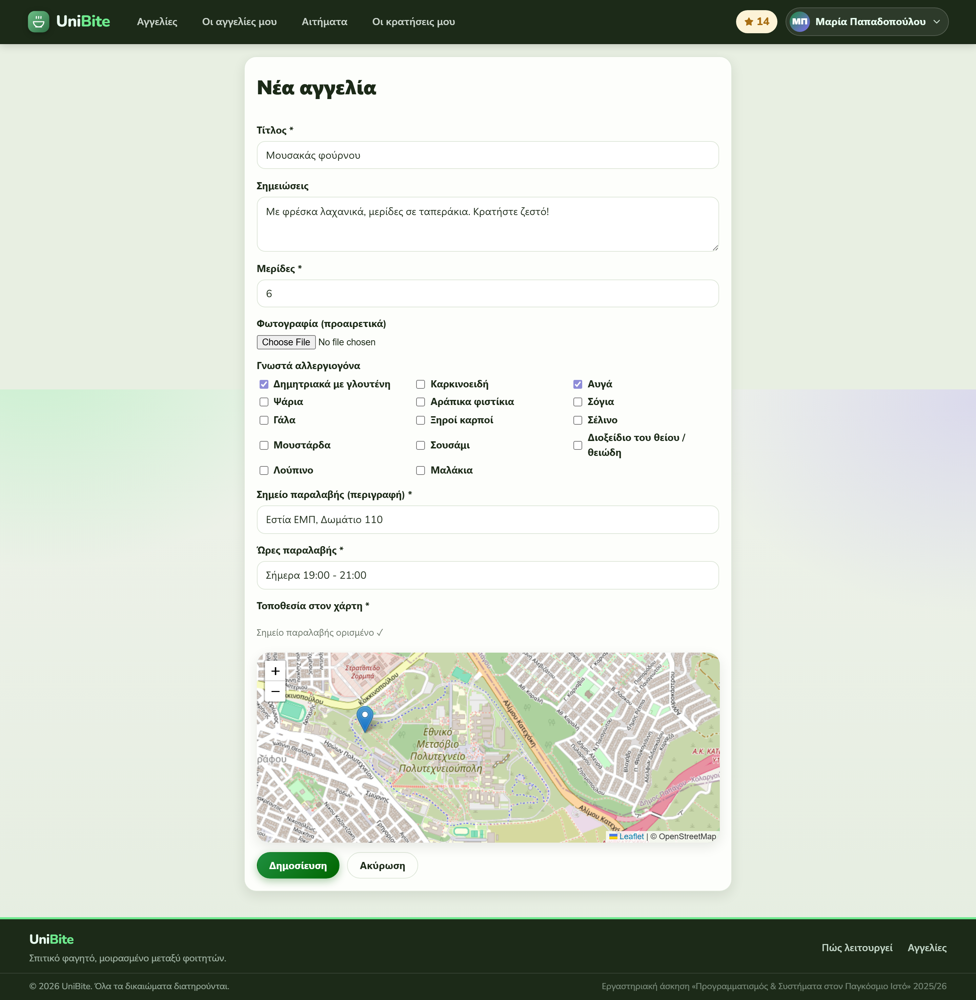
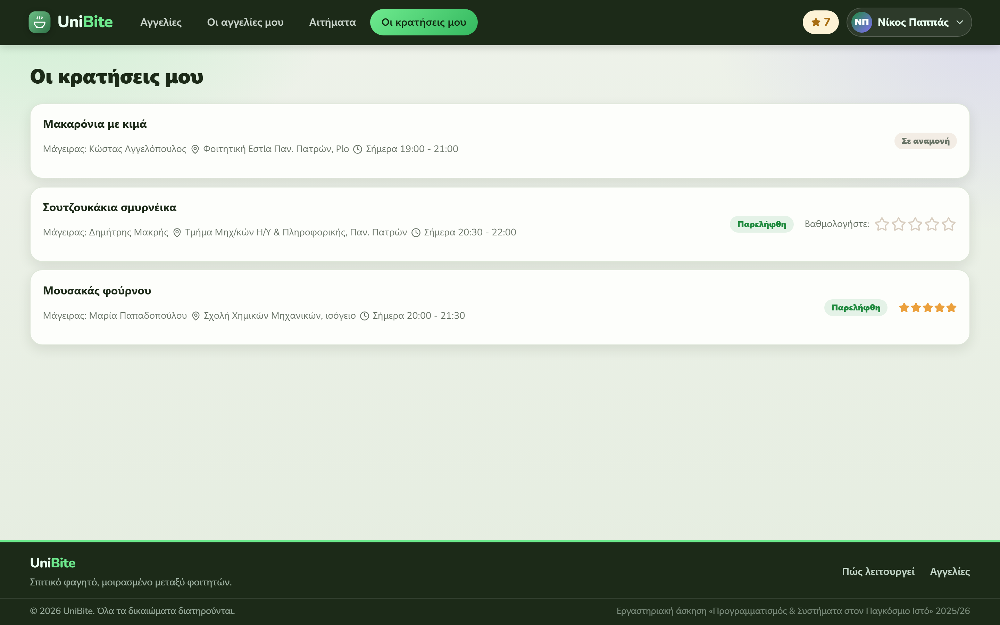
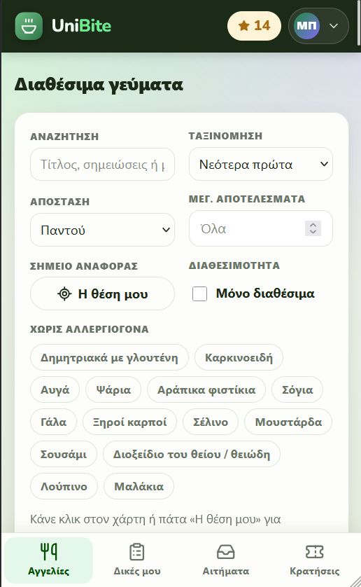
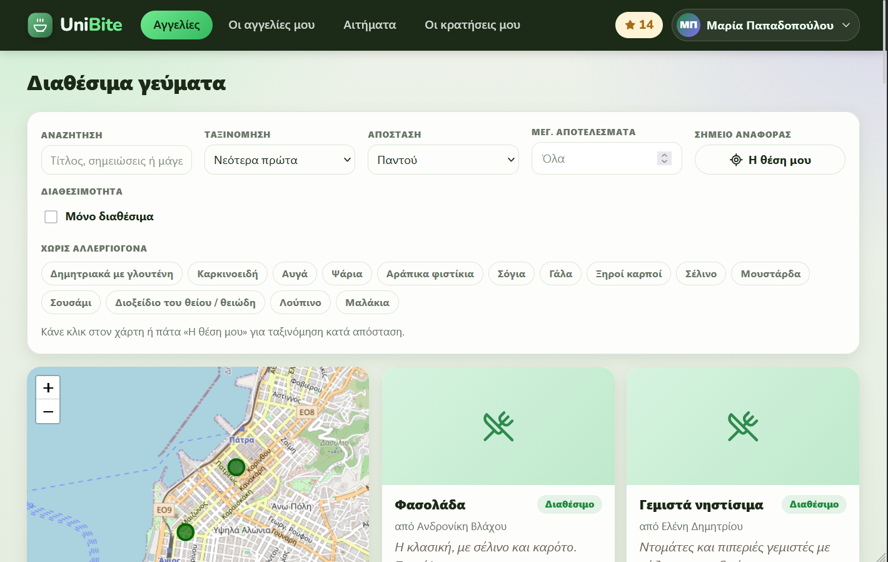

Μάθημα: Προγραμματισμός και Συστήματα στον Παγκόσμιο Ιστό — Εργαστηριακή Άσκηση 2025/26 Ομάδα:
Ονοματεπώνυμο
Αριθμός Μητρώου
[ ΒΑΣΙΛΕΙΟΥ ΙΩΑΝΝΗΣ ]
[ 1108356 ]
[ ΤΡΙΑΝΤΑΦΥΛΛΗΣ ΘΕΟΔΩΡΟΣ ]
[ 1112133 ]
1. Στόχος & Περιγραφή
Το UniBite είναι μια διαδικτυακή πλατφόρμα διαμοιρασμού φαγητού για την πανεπιστημιακή
κοινότητα. Φοιτητές που μαγειρεύουν περισσευούμενες μερίδες (μάγειρες) δημοσιεύουν αγγελίες, και
συμφοιτητές τους (καταναλωτές) δεσμεύουν μερίδες χρησιμοποιώντας πόντους (credits). Με κάθε μερίδα που
προσφέρει κανείς μαζεύει πόντους, με τους οποίους μπορεί να ζητήσει μερίδες από άλλους — έτσι δεν
χρειάζεται να μαγειρεύουν όλοι κάθε μέρα.
MySQL / MariaDB (mysql2), σχεσιακό σχήμα με ξένα κλειδιά
Front-end
Vanilla JavaScript SPA — DOM manipulation, fetch() API, JSON. Leaflet + OpenStreetMap (χάρτης).
Responsive CSS (Flexbox, Grid, Media Queries)
Η εφαρμογή είναι Single-Page Application: η πλοήγηση και η ενημέρωση του περιεχομένου
γίνονται δυναμικά μέσω JavaScript χωρίς επαναφόρτωση σελίδας (addEventListener,
e.preventDefault()), και η επικοινωνία με τον server γίνεται αποκλειστικά με
fetch() και JSON.
3. Σχεδιασμός Βάσης Δεδομένων
Η βάση είναι σχεσιακή και αποτελείται από 6 πίνακες. Ακολουθεί το διάγραμμα οντοτήτων–συσχετίσεων (ER).
erDiagram
users ||--o{ listings : "δημοσιεύει (cook)"
users ||--o{ requests : "αιτείται (consumer)"
users ||--o{ ratings : "βαθμολογεί"
listings ||--o{ requests : "δέχεται"
listings ||--o{ ratings : "αξιολογείται"
listings ||--o{ listing_allergens : "έχει"
allergens ||--o{ listing_allergens : "σε"
requests ||--o| ratings : "έχει"
users {
int id PK
varchar username
varchar email
varchar phone
varchar password_hash
varchar display_name
enum role "student | admin"
int points "default 5"
datetime created_at
}
listings {
int id PK
int cook_id FK
varchar title
varchar photo_url "nullable"
text notes
int portions_total
int portions_available
varchar pickup_location
decimal pickup_lat
decimal pickup_lng
varchar pickup_time
datetime created_at
}
allergens {
int id PK
varchar name
}
listing_allergens {
int listing_id PK, FK
int allergen_id PK, FK
}
requests {
int id PK
int listing_id FK
int consumer_id FK
enum status "pending|approved|rejected|picked_up|no_show"
datetime created_at
datetime approved_at
datetime picked_up_at
tinyint rating_penalty_applied
}
ratings {
int id PK
int request_id FK "UNIQUE (1:1)"
int listing_id FK
int consumer_id FK
int cook_id FK
int stars "1-5"
datetime created_at
}
3.1 Περιγραφή πινάκων
Πίνακας
Ρόλος
users
Όλοι οι χρήστες (φοιτητές & admin). Κάθε φοιτητής είναι ταυτόχρονα δυνητικός μάγειρας και καταναλωτής.
Κρατά τους πόντους (points) — νέοι χρήστες ξεκινούν με 5.
listings
Οι αγγελίες φαγητού. Συνδέεται με τον μάγειρα (cook_id). Κρατά διαθέσιμες/συνολικές μερίδες,
σημείο & ώρα παραλαβής και συντεταγμένες για τον χάρτη.
allergens
Λίστα αναφοράς με τα 14 αλλεργιογόνα της ΕΕ (eufic.org).
listing_allergens
Πίνακας σύνδεσης Many-to-Many: ποια αλλεργιογόνα δηλώνει κάθε αγγελία.
requests
Τα αιτήματα δέσμευσης μερίδας. Κρατά την κατάσταση (pending → approved → picked_up / no_show / rejected) και
τις χρονοσφραγίδες για τους κανόνες 48ώρου.
ratings
Οι βαθμολογίες (1–5 αστέρια). Σχέση 1:1 με το request (μία βαθμολογία ανά παραληφθείσα μερίδα,
μέσω UNIQUE).
3.2 Καταστάσεις αγγελίας (υπολογίζονται κατά την ανάγνωση)
Ενεργή — ηλικία < 48 ώρες και διαθέσιμες μερίδες > 0. Εμφανίζεται κανονικά σε
λίστα/χάρτη.
Ανενεργή — ηλικία < 48 ώρες και 0 μερίδες. Εμφανίζεται γκριζαρισμένη.
Διεγραμμένη — ηλικία ≥ 48 ώρες. Δεν εμφανίζεται στους χρήστες αλλά παραμένει στη ΒΔ για
στατιστικά.
3.3 Κανόνες πόντων (credits)
Νέος χρήστης: 5 πόντοι. Δέσμευση μερίδας απαιτεί ≥ 1 πόντο (χρέωση −1 κατά την έγκριση).
Μάγειρας: +1 ανά παραδομένη μερίδα, και +1 επιπλέον αν η βαθμολογία > 3/5
(π.χ. 2/5 → 1 πόντος, 4/5 → 2 πόντοι).
Μη παραλαβή δεσμευμένης μερίδας: −1 στον αιτούντα (η μερίδα επιστρέφει στο απόθεμα).
Μη βαθμολόγηση εντός 48 ωρών από την παραλαβή: −1 στον παραλήπτη (περιοδικός έλεγχος στον
server).
4. Αρχιτεκτονική & REST API
Ο server εκθέτει REST endpoints (JSON) που καταναλώνει η SPA με fetch():
Ομάδα
Βασικά endpoints
Auth
POST /api/auth/register · login · logout, GET /api/auth/me
Αγγελίες
GET /api/listings (με φίλτρο/ταξινόμηση απόστασης), GET /mine, POST,
PUT/:id, DELETE/:id
Αιτήματα
POST /api/requests, GET /incoming · /mine,
POST /:id/approve · reject · pickup · noshow
Βαθμολογίες
POST /api/ratings
Admin
GET /api/admin/stats · /leaderboard
Ένας περιοδικός έλεγχος στον server (setInterval) εφαρμόζει τις ποινές μη-βαθμολόγησης 48ώρου
και απορρίπτει εκκρεμή αιτήματα σε ληγμένες αγγελίες.
5. Παρουσίαση Εφαρμογής (Screenshots)
Η επίδειξη ακολουθεί τη ροή των προδιαγραφών: Επισκόπηση → Ρόλοι/Σύνδεση → Καταναλωτής →
Μάγειρας → Διαχειριστής → Προφίλ → Responsive. Οι οθόνες desktop (Εικ. 1–12) παράγονται
αυτόματα με το capture-screenshots.js· οι Εικ. 13–14 (mobile) τραβιούνται χειροκίνητα.

Εικ. 1 — Αρχική σελίδα (επισκέπτης): επισκόπηση της πλατφόρμας με ζωντανά στατιστικά,
«πώς λειτουργεί» και το σύστημα πόντων.

Εικ. 2 — Σύνδεση (Α — Ρόλοι/Πρόσβαση): είσοδος με email ή όνομα χρήστη.

Εικ. 3 — Εγγραφή νέου χρήστη (Γ2): νέοι χρήστες ξεκινούν με 5 πόντους· έλεγχος διπλότυπου
email και ταιριάσματος κωδικών σε πραγματικό χρόνο.Εικ. 4 — Δυναμικό Feed (Γ1): λίστα αγγελιών (6 ανά σελίδα) + χάρτης Leaflet με όλες τις
καρφίτσες. Ο σελιδοποιητής («Προηγ. / 1 2 3 / Επόμ.») και ο μετρητής «1–6 από N γεύματα» εμφανίζονται
κάτω από τις κάρτες. Εξαντλημένες αγγελίες γκριζαρισμένες. (login: maria)

Εικ. 5 — Φίλτρα & ταξινόμηση (Γ1): αναζήτηση κειμένου, ταξινόμηση κατά βαθμολογία
και αποκλεισμός αλλεργιογόνων με chips («χωρίς γάλα»). Ο σελιδοποιητής ενημερώνεται αυτόματα με τα
φιλτραρισμένα αποτελέσματα.

Εικ. 6 — Ταξινόμηση/φιλτράρισμα κατά απόσταση (Γ1): geolocation μέσω «Η θέση μου» (Πάτρα)
και όριο maxKm = 5 km — η λίστα εμφανίζει μόνο τα κοντινά γεύματα με σελιδοποίηση.

Εικ. 7 — Δημιουργία αγγελίας (Β1, Β2): τίτλος, σημειώσεις, μερίδες, φωτογραφία, επιλογή
αλλεργιογόνων και ορισμός σημείου παραλαβής στον χάρτη.
Εικ. 9 — Διαχείριση αιτημάτων (Β3): όλες οι καταστάσεις — αποδοχή/απόρριψη, και μετά την
έγκριση σήμανση παραλαβής ή μη-παραλαβής.

Εικ. 10 — «Οι κρατήσεις μου» & Αξιολόγηση (Γ2, Γ3): αιτήματα σε αναμονή, ολοκληρωμένη
βαθμολόγηση και το widget βαθμολόγησης 1–5 αστέρων μετά την παραλαβή.
Εικ. 12 — Προφίλ χρήστη: στοιχεία λογαριασμού (email, τηλέφωνο, πόντοι) και στατιστικά
δραστηριότητας (αγγελίες, μερίδες που προσφέρθηκαν, μέση βαθμολογία, κρατήσεις).

Εικ. 13 — Responsive σε κινητό (Ε3): μονή στήλη, φίλτρα σε στοίβα και κάτω bottom tab bar
αντί για top nav.

Εικ. 14 — Responsive σε tablet (Ε3): προσαρμογή της διάταξης (χάρτης + κάρτες, top nav) σε
ενδιάμεσο πλάτος οθόνης.
6. Οδηγίες Εκτέλεσης
Δημιουργία βάσης: mysql -u root < schema.sql
Ρυθμίσεις σύνδεσης στο .env (DB_HOST, DB_USER, DB_PASSWORD, DB_NAME)
npm install
npm start → http://localhost:3000
Δοκιμαστικοί λογαριασμοί (κωδικός: pass1234): admin (διαχειριστής),
maria / giorgos / eleni / sofia / androniki
(φοιτητές Αθήνας), kostas / nikos / dimitris (φοιτητές Πάτρας).
Η εξαγωγή της ΒΔ περιλαμβάνεται ως unibite_export.sql.